東京大学 2003年 理科 第6問
問題
円周率が3.05より大きいことを証明せよ。
解答
解答1
Mathematicaが持つ知識を活用するなら、FullSimplifyを用いるだけで証明完了。
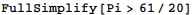
解答2
単位円に内接する正八角形の1辺の長さを4倍した値L8を計算する。
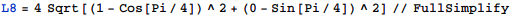
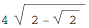
近似値を表示。
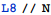
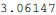
数値近似精度は十進で約15桁だから3.05より大きいとしてもよいが、
FullSimplifyを用いて、厳密にこの値が3.05より大きいことを証明できる。
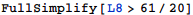
π>L8>3.05だから、題意は示された。
解答3
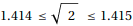を用いて区間演算することで、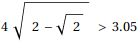を示すことも可能。
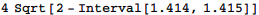
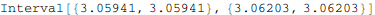
従って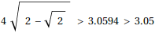より、題意は示された。
補足・感想
どこまでMathematicaの機能を活用するかで迷う。